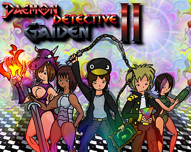

|  | |
| Tempo de jogo | Não Jogado |
| Última Atividade | Nunca |
| Adicionado | 04/04/2025 0:19:56 |
| Modificado | 04/04/2025 0:22:08 |
| Status de Conclusão | Not Played |
| Biblioteca | Itch.io |
| Fonte | itch.io |
| Plataforma | PC (Windows) |
| Data de Lançamento | 02/01/2019 |
| Pontuação da Comunidade | |
| Avaliação da crítica | |
| Pontuação do Usuário | |
| Gênero | Hack and slash/Beat 'em up Platform |
| Desenvolvedor | Yal |
| Editor | Yal |
| Funções | Multiplayer Single Player |
| Links | Official Itch Twitch |
| Tag | [GGDeals] Ignored |
When the latest exhibit of the New Magma City Art Museum has its grand opening, it doesn't take long until people are going missing. And new, undocumented paintings start showing up in the collection... so well made, it feels like you could get lost in those worlds forever.
When the ordinary New Magma City penguin police force can't make nor heads nor tails out of this supernatural case, the ragtag band of teenage private investigators over at Daemon Detectives, Inc. gets called in to save the day once again!
Daemon Detective Gaiden 2 is an action platformer where you fight enemies and jump your way through obstacles, trying to not only make your way to the finish line with your hide intact, but also retrieve as many of the hidden paintings in each world as humanly possible.
Coins obtained in the levels can be spent on a variety of powerups to help even the odds, and every character has an unique ability that alters their gameplay style drastically.
As you defeat the bosses of each world, you gradually piece together not only the final boss' lair, but also the dark history behind its creation...
[Windows]
[Linux]